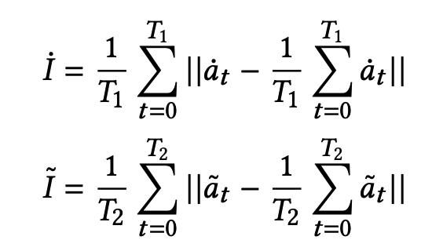
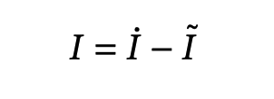

VibroScale: Turning Your Smartphone into a Weighing Scale

Shibo Zhang
Qiuyang Xu
Sougata Sen
Nabil Alshurafa
Northwestern University, HABits Lab
Chicago, IL, USA
[Paper Download]


---"Do we have a method to utilize the powerful sensing capability of an everyday smartphone and turn it into a weighing scale?"
 Smartphones, with their ubiquity and plethora of embedded sensors enable on-the-go measurement. Here, we describe one novel measurement potential, weight measurement, by turning an everyday smartphone into a weighing scale. We describe VibroScale, our vibration-based approach to measuring the weight of objects that are small in size. Being able to objectively measure the weight of objects in free-living settings, without the burden of carrying a scale, has several possible uses, particularly in weighing small food items. We designed a smartphone app and regression algorithm, which we termed VibroScale, that estimates the relative induced intensity of an object placed on the smartphone.
Smartphones, with their ubiquity and plethora of embedded sensors enable on-the-go measurement. Here, we describe one novel measurement potential, weight measurement, by turning an everyday smartphone into a weighing scale. We describe VibroScale, our vibration-based approach to measuring the weight of objects that are small in size. Being able to objectively measure the weight of objects in free-living settings, without the burden of carrying a scale, has several possible uses, particularly in weighing small food items. We designed a smartphone app and regression algorithm, which we termed VibroScale, that estimates the relative induced intensity of an object placed on the smartphone.
Device and Implementation

Device: Google Nexus 5 (Android 4.4 API level 19)
Steps of VibroScale App:
1. It turns on smartphone’s vibration motor and uses its accelerometer to measure the vibration intensity for 5 seconds.
2. It guides the user to place the object on smartphone, with vibration motor on and accelerometer recording for 5 seconds.
3. It runs algorithm pipeline to estimate the object's weight.
Data Processing and Modeling
The first step in data processing involves ensuring that the data collected from the accelerometer are at 200 Hz. If, due to hardware limitations, the data collected for any second are not 200 Hz, we interpolate the data using a linear interpolation method. Next, we extract the zero-load stage (first 3 seconds) accelerometer’s y-axis signal ȧt (t = 0,..., T1) and the with-load stage (after 3 seconds) accelerometer’s y-axis signal ãt (t=0,..., T2). We use Equations 1 and 2 to obtain the zero-load intensity and with-load intensity, respectively.
Finally, we obtain the relative intensity induced by the object by computing the difference between İ and Ĩ, as shown below.
This relative induced intensity 𝐼 is used to build a linear regression model, which we use to predict the weight of the object. The pipeline above pictorially presents the entire process.

Data processing and modeling pipeline
Experiments and Results
Dataset: To determine the possibility of determining an object’s weight using VibroScale, we used the following 52 distinct items: apples (24 pieces), onions (16 pieces), green pepper (6 pieces), and non-food tableware including glasses and bowls (6 pieces).

Variation in vibration when no weight is placed on the smartphone
or when variously weighted apples are placed on the smartphone.
Evaluation strategy: To evaluate the performance of our model, we performed a leave-one-object-out cross validation for each object and then for all objects combined. When evaluating the N items, we build a linear regression model using N-1 items, and test it on the Nth item, we repeat this step N times. We tested different axes of the accelerometer and performed Principle Component Analysis (PCA) to calculate the PCA components of the x/y axis and x/y/z axis for intensity calculation. The dominant frequency components of the different axes were also tested to derive intensity. In the end, we found that the most prominent variation was observed when using y-axis data in the time domain.
 The figure left shows the distribution of relative vibration intensity based on weight. The relationship is noisy due to the variation in natural frequency of the objects and due to the employed prediction model. Nonetheless, we observed a moderate linear correlation, with a Pearson correlation coefficient of 0.70 (p=6e-9). Overall, the objects used in our study ranged from 53 grams to 376 grams. When we performed a leave-one-object-out cross validation, we observed that the mean absolute error (MAE) in predicting the weight of the object was 33 grams, and the mean absolute percentage error (MAPE) was 23.7%. The MAE and MAPE for apples were 12.4 grams and 7.7%, respectively, while they were 41.3 grams and 33.2% for onions.
The figure left shows the distribution of relative vibration intensity based on weight. The relationship is noisy due to the variation in natural frequency of the objects and due to the employed prediction model. Nonetheless, we observed a moderate linear correlation, with a Pearson correlation coefficient of 0.70 (p=6e-9). Overall, the objects used in our study ranged from 53 grams to 376 grams. When we performed a leave-one-object-out cross validation, we observed that the mean absolute error (MAE) in predicting the weight of the object was 33 grams, and the mean absolute percentage error (MAPE) was 23.7%. The MAE and MAPE for apples were 12.4 grams and 7.7%, respectively, while they were 41.3 grams and 33.2% for onions.
The table below indicates objects used in the study along with their actual weight range and error in predicted weights.
| Items | Apple | Onion | Pepper | Tableware | All |
|---|---|---|---|---|---|
| Number(N) | 24 | 16 | 6 | 6 | 52 |
| Min/Max(g) | 114/202 | 53/376 | 118/164 | 59/263 | 53/376 |
| MAE(g) | 12.4 | 41.3 | 16.2 | 32.4 | 33.0 |
| MAPE(%) | 7.7 | 33.2 | 11.9 | 25.9 | 23.7 |
(MAE, mean absolute error; MAPE, mean absolute percentage error.)
The figure below depicts the variation in actual and predicted weight of apples. For apples weighing between 114 and 202 grams, we observed a MAE of 12.4 grams with a standard deviation of 10.7 grams and a MAPE of 7.7%.

Publication
Shibo Zhang, Qiuyang Xu, Sougata Sen, Nabil Alshurafa. 2020.
VibroScale: Turning Your Smartphone into a Weighing Scale.
In Adjunct Proceedings of the 2020 ACM International Joint Conference on Pervasive andUbiquitous Computing and Proceedings of the 2020 ACM International Sym-posium on Wearable Computers (UbiComp/ISWC ’20 Adjunct), September12–16, 2020, Virtual Event, Mexico.ACM, New York, NY, USA, 4 pages.
https://doi.org/10.1145/3410530.34143971
@inproceedings{vibroscale,
author = {Zhang, Shibo and Xu, Qiuyang and Sen, Sougata and Alshurafa, Nabil},
title = {VibroScale: Turning Your Smartphone into a Weighing Scale},
year = {2020},
isbn = {978-1-4503-8076-8/20/09},
publisher = {Association for Computing Machinery},
doi = {10.1145/3410530.3414397},
booktitle = {Adjunct Proceedings of the 2020 ACM International Joint Conference on Pervasive and Ubiquitous Computing and Proceedings of the 2020 ACM International Symposium on Wearable Computers (UbiComp/ISWC ’20 Adjunct), September 12--16, 2020, Virtual Event, Mexico},
keywords = {smartphone, weighing scale, measurement, vibration, accelerometer},
location = {Virtual Event, Mexico},
series = {UbiComp ’20}
}
Webpage by Shibo adapted from Yen-Chia Hsu, video by Qiuyang